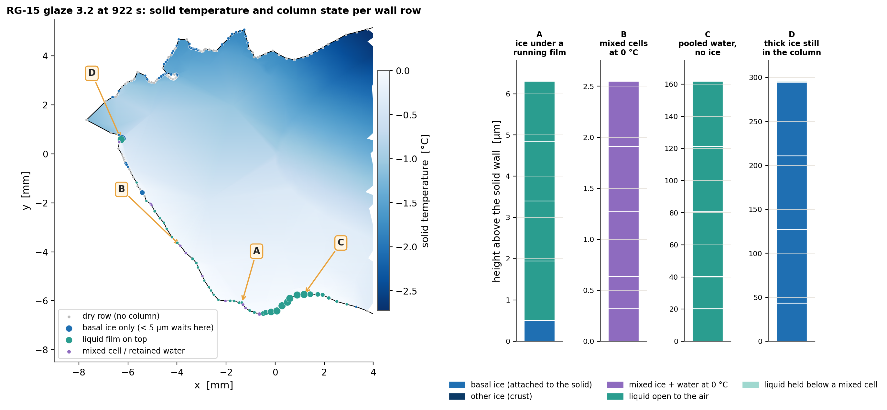
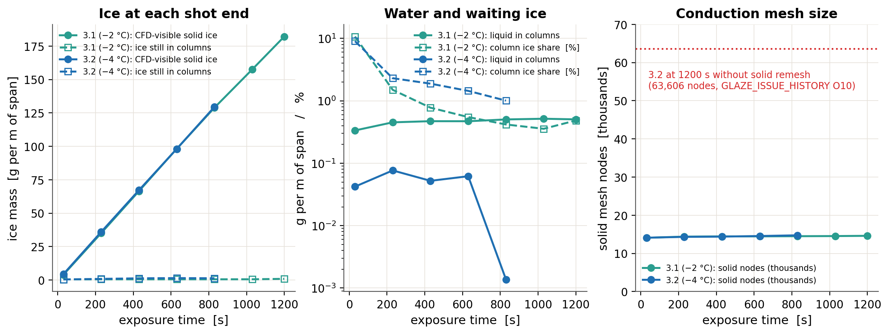
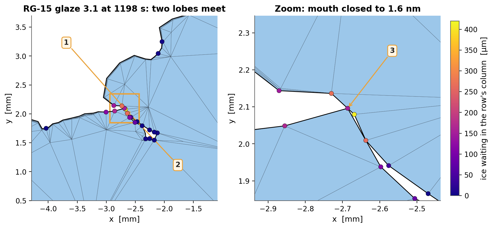

Glaze: phase-aware ice
Near 0 °C the water does not all freeze where it lands. It runs back as a film, freezes underneath, melts and refreezes, and can be trapped under thin crusts. This page explains the glaze path of the solver (icing run-coupled and glaze campaigns): water columns that hold ice and liquid together, the promotion of column ice into the CFD-visible wall, melting, crevice sealing, and the machinery that keeps day-long runs alive and replayable.
- Why glaze needs more than the rime model Basic
- Phase-aware columns Basic
- A real glaze state, row by row Intermediate
- One coupled solve: columns + solid Intermediate
- From column ice to the CFD wall Intermediate
- The glaze shot loop Advanced
- Melting and recession Advanced
- Fronts that meet: merging and sealing (R40) Advanced
- Glaze controls Advanced
- When an interval fails: capture and replay Advanced
- Assumptions, status and limits Advanced
Why glaze needs more than the rime model Basic
The rime path (Step 7, icing run-nodal) assumes a cold world: liquid exists only as a film exactly at 0 °C on top of the surface, everything below it is solid and colder than 0 °C, and a node that would warm above 0 °C is an error. That is a good description of rime, where most water freezes on impact. Glaze breaks every part of it:
- A real liquid film. Only a part of the water freezes; the rest flows downstream, pushed by air shear, pressure gradient and gravity, and freezes somewhere else (Step 6).
- Ice and water in the same place. Ice grows under the running film. Supercooled droplets can freeze partly on arrival and make a slush cell that is ice and water at 0 °C.
- Melting and refreezing. Recovery heating, warm water and latent heat can bring ice back to 0 °C and melt it.
- Crusts and trapped water. A frozen cap can form over water. That water is no longer free to run back.
docs/GLAZE_SWIM.md names the target: a SWIM-type model ("shallow-water icing", after Bourgault, Beaugendre and Habashi, 2000, and NASA GlennICE SWIM). It lists the terms such a model needs: a film mass equation, a film energy equation, conduction through film, ice and substrate with latent heat, vapour exchange, crusts, and a rule for when the surface is dry, wet and freezing, or wet and above freezing. The phase-aware path carries each of them in some form; the table in that document says which.
For glaze the solver stops treating the water film as a single number per wall node. It stacks small cells of water on every node, each knowing how much ice and how much liquid it holds. Heat flows through the stack and into the ice below in one solve. Ice at the bottom of a stack, once thick enough, is handed over to the solid ice that the airflow sees.
Phase-aware columns Basic
The central object is phase_columns.PhaseColumns: for every wall row (one per thermal contact node), a column of material cells from the wall (bottom) to the air (top). Each cell stores only two extensive numbers, water mass \( m \) and enthalpy \( H \), per unit span. Temperature and phase follow from them by the same sharp enthalpy law as the solid (Step 7): cold ice below \( H = -mL_f \), a mixed cell at exactly 0 °C between \( -mL_f \) and 0, warm liquid above 0.
@dataclass
class PhaseColumns:
mass: np.ndarray # total water, kg/m span per material cell; bottom -> air
enthalpy: np.ndarray # J/m span, relative to liquid water at Tm
lengths: np.ndarray # surface dual lengths, m
time: float = 0.
def phase(self):
# Empty storage cells have no energy or phase; TM is a display sentinel.
temperature,liquid,_=equilibrium(self.enthalpy,self.mass,np.where(self.mass==0,1.,0.))
return temperature,liquid,self.mass-liquid
The thickness of a cell is its liquid volume plus its ice volume, divided by the row's dual length (the half-panels around the node). Water connectivity is decided by a deliberately strict rule, classify_phase_columns:
_,liquid,ice=state.phase()
exposed=np.flip(np.cumprod(np.flip(ice==0.,axis=1),axis=1).astype(bool),axis=1)
basal=np.cumprod(liquid==0.,axis=1).astype(bool)
return ColumnTopology(np.where(exposed,liquid,0.),np.where(exposed,0.,liquid),
np.where(basal,ice,0.),np.where(basal,0.,ice))
Read from the top down: liquid in cells with no ice at all between them and the air is exposed, free to run back. Read from the bottom up: ice in cells with no liquid at all between them and the wall is basal, attached to the solid. Everything else is retained: water under a crust or in a mixed cell, and ice above water. "A mixed cell blocks a proven pure-phase path" (PHASE_AWARE_COLUMNS.md): the model does not guess a permeability.
classify_phase_columns distinguishes. Only basal ice at least min_promotion_thickness = 5 µm thick moves into the solid (dashed line in the right column); thinner basal ice waits in its column, fully represented thermally.Two closures shape what the columns look like in practice:
- Sharp basal freezing front (
settle_film_ice, controlfilm_ice_settling, default on). Ice formed inside the air-connected film is moved to one pure ice cell at 0 °C at the bottom of the film; each cell's liquid stays above it with its own energy. This is "the Messinger/SWIM thin-film assumption: ice accretes on the surface beneath a liquid film that keeps flowing" (docstring). Without it, a top cell cooled to "mixed" was classified as a crust and froze the whole film in place (GLAZE_ROBUSTNESS R5). - Bounded cell counts (
consolidate_phase_columns). Runs of same-kind cells are rebinned todepth_cells(4 in the RG-15 packages) without ever merging across a phase interface. Before this, cell counts doubled every interval (R9, R16).
A real glaze state, row by row Intermediate

runs/nibi/glz81_32/package/results_32/shot_06/ice/slot_1). Left: the solid (ice + PLA) coloured by temperature, from −3.7 °C to 0 °C; dots are wall rows, coloured by state and sized by column thickness. Right: the cells of four rows picked automatically from the data, bottom to top. A (x = −1.4, y = −6.1 mm): 0.5 µm of basal ice under 5.8 µm of running film: textbook glaze. B: five mixed cells (2.6 µm) at 0 °C, which block both runback and promotion. C: 162 µm of water and no ice on the lower surface, where runback collects. D: 294 µm of basal ice at the ice tip, still in its column under 1.2 µm of water. In the whole state: 1.38 g/m of basal ice in 880 rows, 0.30 g/m of exposed liquid in 43 rows, 4.5 mg/m of retained water in 10 rows. Script _build/fig_glaze.py.Row D deserves a word. Basal ice thicker than 5 µm is normally promoted, but each promotion pass is capped and throttled where the wall cannot accept the deposit (next section). The checkpoint does not record which limit held this row. The measured column-ice statistics of PHYSICS_REVIEW.md (2026-11-16) found the same signature in other states: a few rows at a sharp feature holding hundreds of micrometres of waiting ice. That observation is why criterion H6 was restated (below).
One coupled solve: columns + solid Intermediate
coupled_phase_columns.advance_coupled_columns assembles the 2D enthalpy solid and every column into one implicit sharp-enthalpy system and hands it to advance_enthalpy (the solver of Step 7). Each column's bottom cell is bonded to its wall node with conductance \( G = 2k\,L/\Delta z \) (half-cell resistance only, i.e. perfect bonding), and the contact block \( G\left(\begin{smallmatrix}1&-1\\-1&1\end{smallmatrix}\right) \) cancels exactly, so contact heat is internal. At the top face of each column act convection to the recovery temperature (Robin condition behind the top half-cell), an optional flux, and vapour exchange:
with \( \rho_{sat} \) over liquid (Buck) or ice (Murphy-Koop) depending on the top cell's phase, linearised about the start-of-step temperature (semi-implicit). Every evaporated kilogram leaves with \( L_v + c_v(T_s - T_m) \); taken from an ice crust this automatically becomes the heat of sublimation (GLAZE_SWIM.md).
Two numerical decisions in this function came from real failures:
- Thin-film limit. A column thinner than 1 µm, or thinner than 20 µm with Biot number \( h\,\delta/k < 0.02 \), gets no depth unknowns. Its water and enthalpy join the wall node's inventory for the solve (it is isothermal with the wall to within that Biot number) and it takes its share back afterwards. This replaced nearly massless depth unknowns behind stiff-contact failures (R1, R2, R11, R17, R19).
- Mass-limited sinks. A film that would evaporate completely within a step gets an explicit sink equal to exactly the latent cost of the water it holds (invariant I10: no sink removes more than its inventory).
Each geometry interval (4 s) is advanced in sub-steps of thermal_substep = 0.25 s by collected_coupled_melt._glaze_substep: deposit droplets into the top cells, settle impact ice, run back the exposed film and solve the coupled conduction/phase/vapour system, settle again, consolidate.
incoming=dt*np.asarray(nodal_mass_rate,float)
energy=incoming*CW*(env.droplet_temperature-TM)+dt*np.asarray(nodal_kinetic_rate,float)
columns=deposit_phase_columns(state.columns,incoming,energy)
if film_ice_settling:
columns,impact_settled=settle_film_ice(columns)
...
evolved,transport,thermal=advance_runback_thermal_history(intermediate,boundary,dt,
edge_shear,edge_force, transport_controls=dict(...), thermal_controls=dict(...))
if film_ice_settling:
columns,settled=settle_film_ice(evolved.columns);evolved=replace(evolved,columns=columns)
evolved=replace(evolved,columns=consolidate_phase_columns(evolved.columns,depth_cells,max_cells=max_cells))
Deposit, runback and freezing are split to first order, so the sub-step sets the splitting error. With one 4 s step per interval, "the water of a whole interval ran back before any of it could freeze": on RG-15 shot 1, intervals of 4, 2, 1 and 0.5 s gave film inventories of 1.4×10⁻⁸, 3.4×10⁻⁵, 4.8×10⁻⁵ and 4.9×10⁻⁵ kg/m (GLAZE_ROBUSTNESS R21). The 0.25 s sub-step is the value shown converged on real loads before a package is frozen (invariant I7).
From column ice to the CFD wall Intermediate
The CFD only sees the solid wall. Ice that stays in the columns changes heat flow but not the airflow. column_ice_growth.promote_basal_column_ice moves basal ice into the solid: it takes the fully frozen cells contiguous with the substrate, projects their mass and current enthalpy onto wall panels, grows the wall with the rime path's local vertex-volume kernel (nodal_growth._grow_local_volume), and appends the new elements with enthalpy_growth.append_enthalpy_layer, which copies the old nodal enthalpy verbatim. The remaining column material is remapped to the moved wall row by row (phase_column_remap.remap_phase_columns_local). Mixed cells and ice separated from the wall by water stay in the columns.
topology=classify_phase_columns(state.columns)
attached=topology.basal_ice_mass>0
basal=np.where(attached,state.columns.mass,0.).sum(axis=1)/(density*state.columns.lengths)
attached&=(basal>=min_thickness)[:,None]
...
limit=max_fraction*state.columns.lengths
if not np.any(attached) or not np.any(np.where(attached.any(axis=1),basal,0.)>=trigger_fraction*limit):
return ColumnIceGrowth(state,surface,none,none.copy(),0.,0.)
Three thresholds control when this happens, each tied to a failure:
min_promotion_thickness= 5 µm. Rows with less basal ice keep it in the column. Promoting sub-micron ice made sliver triangles whose stiffness-to-capacity ratio (~10¹¹) stalled the solver (R7). The CFD wall therefore lags the true ice by less than 5 µm, 1 % of the 0.5 mm sand-grain roughness the CFD already assumes (PHYSICS_REVIEW 2026-11-16).promotion_trigger= 0.4 andpromotion_cap= 0.5, fractions ofmax_fraction× dual length. Nothing is promoted until some row's ice reaches the trigger, and no row promotes more than the cap per pass (at mostMAX_PROMOTION_PASSES= 4 passes per call). Promoting every few micrometres gave thousands of sliver triangles with 0.04° angles (R26). The last interval of a shot uses trigger 0, so the next CFD wall lags by less than 5 µm.- Throttling. If the growth kernel would push a vertex beyond its panel limit or fold the front, only the rows feeding that vertex are scaled down (factor 0.9 / excess, up to 12 rounds); the rest of the wall still promotes. An all-or-nothing refusal had once stopped promotion on the whole wall (R32, R34).
The v8.1 test plan stated H6 as "column ice at most 2 % of the total ice at every shot end". Both returned runs failed it at 30 s (3.1: 10.7 %, 3.2: 9.0 %) and passed later. The analysis in PHYSICS_REVIEW.md (2026-11-16) showed why the share was the wrong measure: early column ice is a sub-5 µm layer spread over most of the wall, held there by design, so its share mostly measures elapsed time; meanwhile a local lag of 419 µm beside a closing crevice of 3.1 at 1200 s was only 0.11 % of the total and passed. From package v8.2 H6 reads: at every shot end, no row holds column ice thicker than 50 µm. The 50 µm is "an engineering resolution bound, not a measured CFD sensitivity". Figure 3 shows the share falling with time in both cases.

results_3N/shot_0N/ice/summary.json). Left: CFD-visible solid ice grows almost linearly to 182 g/m (3.1, 1200 s) and 130 g/m (3.2, 830 s; shot 6 of 3.2 stopped at 926 s, see failures); ice still in the columns stays below 1.5 g/m. Centre: the column-ice share starts near 10 % and falls to 0.5-1 % (log scale); the warmer case 3.1 keeps ten times more liquid in its columns. Right: with solid_remesh on, the conduction mesh stays at 14.1-14.7 thousand nodes, against 63,606 for an older 3.2 run without it. In every completed shot shown, every interval used the active-set solver path and no interval was halved.The glaze shot loop Advanced
A campaign file with "ice_model": "glaze" (icing run-campaign) reuses the rime campaign's shot structure (Step 11) and replaces two stages: the ice stage and the shot-end adaptation (glaze_campaign.run_glaze_shots). The clean nodal state is converted once into a glaze history (run_glaze_initial → initialize_from_cold_checkpoint), recording the clean wall for roughness and corner exits.
campaign_32.json: increment 4, thermal_substep 0.25, max_interval_halvings 6, solid_remesh.min_new_nodes 500, mass_gate 1e-8, energy_gate 0.01).The heart of run_glaze_ice is a while loop over intervals. Its error handling encodes the failure taxonomy of invariant I9 ("every failure has a class and a remedy that matches it"):
while True:
try:
evolved, event = glaze_interval(history, surface, ..., duration=take / ticks_per_second, ...)
new_surface, new_history, growth = advance_coupled_geometry(
evolved, surface, ...,
# The last interval of a shot promotes whatever is ready, so the
# CFD wall of the next shot lags by less than min_promotion_thickness.
promotion_trigger=0. if ticks + take >= duration_ticks else controls['promotion_trigger'], ...)
break
except WalltimeExhausted:
raise # out of job time, not a model failure: the next job resumes here
except Exception as error:
if not isinstance(error, ReducibleStep) or take <= floor:
_capture_failure(dest / f'failure_interval_{seq + 1:05d}.pkl', error, history=history, ...)
raise
take = max(floor, take // 2)
...
new_history = _maintain_solid(new_history, new_surface, controls, ledger, dest, seq + 1,
last=ticks + take >= duration_ticks)
...
residual = (total_water(new_history) - ledger['initial_water']
- (ledger['incoming'] - ledger['vapor'] - ledger['runoff'] - ledger['flushed']))
energy = float(np.sum(new_history.solid_enthalpy) + new_history.columns.enthalpy.sum()
- new_history.initial_energy - new_history.external_energy)
if abs(residual) > p.mass_gate or abs(energy) > p.energy_gate:
raise ValueError(f'Cumulative glaze conservation gate failed: mass {residual}, energy {energy}')
The cumulative mass ledger is: water now = water at start + droplets − vapour − runoff − flushed residue. "Flushed" is numerical film thinner than 1 pm (DRY_FILM_THICKNESS), removed and recorded rather than redistributed (R23). Each interval writes its history into slot_0 or slot_1 alternately and then progress.json with the SHA-256 of that history, so an interrupted job always resumes from a complete, verified state.
At the shot end, run_glaze_adaptation optionally refines stretched wall panels (wall_refinement, with conservative solid/column transfer in coupled_wall_refinement.py) and deforms or remeshes the fluid mesh onto the exact grown wall (Step 9). If front merging removed wall vertices during the shot, the fluid mesh cannot be deformed onto the new wall and is regenerated.
Melting and recession Advanced
On the glaze path, melting happens inside the coupled enthalpy solve: a solid node whose enthalpy rises above \( -mL_f \) holds liquid. What happens to that liquid is the job of the first geometry operator, melt_surface.remap_automatic_melt. If no solid node holds liquid it returns at once. Otherwise:
melted_geometry.remove_exposed_meltremoves triangles that are fully liquid at all three corners and connected to the air through full shared edges ("Point contacts, partial melt and buried liquid do not establish drainage"). Their water and sensible energy keep their element provenance.reconstruct_melt_surfacetraces each old wall vertex inward along its bisector to the new exposed boundary, and validates the swept cells; shapes that would need new corners are rejected, not smoothed.coupled_melt_remap.remap_melted_historyputs the released water into the columns of the new wall rows and remaps the columns, with mass and energy audits.
This is whole-element release. A triangle that is half melted keeps its water in its thermal inventory until it is fully liquid. A PLIC-style reconstruction of a straight interface inside a triangle exists as a geometric component (phase_cut.reconstruct_triangle_phase, PARTIAL_PHASE_INTERFACE.md) but is not connected; GLAZE_SWIM.md lists it as remaining work and notes that it "mainly affects melting histories", since in glaze accretion the air is below freezing.
The code also holds an earlier, separate family of melting operators on the cold nodal state, built while the melting design was worked out (MELTING_INTEGRATION.md): heat_recession.solve_heat_recession inverts a known heat per panel into inward wall motion whose removed sensible-plus-latent energy matches it; thermal_recession.advance_thermal_recession couples that to retained-domain conduction; melting_step.advance_melting_step splits runback and melting over one shared time step ("Supports the wet, all-melting branch only"). These are verified building blocks; the glaze campaign uses the coupled-history route above.
One more kind of recession is active in the RG-15 glaze packages: sublimation recession (sublimation_recession: true). On dry rows, sublimation thins the adjacent ice elements in place (conductivity scaled linearly with density) down to a floor of 100 kg/m³ (MIN_SUBLIMATED_DENSITY); with recession on, the density deficit becomes inward wall motion at each geometry step. In the 3.1 state at 1198 s, 83 ice elements are below 880 kg/m³ and the lowest sit exactly at the 100 kg/m³ floor, all on the aft wall (x = 10-299 mm), far from the growing horns.
Fronts that meet: merging and sealing (R40) Advanced
Every wall vertex moves along its own normal. Where the ice surface is concave, neighbouring fronts converge; left alone they fold over each other. front_merging.merge_converging_front (control front_merging) applies the rule of front propagation: overtaken parts of the front disappear. A sub-resolution concave pocket is filled with ice already waiting in its own rows' columns, triangulated on its existing wall nodes, and its interior vertices leave the wall. Conservation is exact: the fill takes the same fraction of each attached basal cell, at that cell's own specific enthalpy.
A harder case appears when two lobes grow towards each other: fronts that are not neighbours along the wall meet, closing a crevice with a cavity behind it.

runs/nibi/glz81_31/.../shot_07/ice/slot_0), upper horn. Dots: wall rows coloured by the ice waiting in their columns. 1: the mouth of the crevice, where wall vertex 471 is 1.6 nm from panel 455; the wall run between them encloses 16 panels around a 0.042 mm² cavity (the R40 entry reports 1.4 nm, 16 panels, 0.04 mm² at 1200 s). 2: rows beside the mouth hold up to 410 µm of ice that could not be promoted, the local lag that the restated H6 targets. 3: zoom on the mouth; the white sliver is the remaining fluid gap. This wall could not be meshed for the airflow: the run "failed in its last mesh adaptation" (GLAZE_ISSUE_HISTORY 5.9).The closure chosen after this failure (GLAZE_ROBUSTNESS R40, PHYSICS_REVIEW 2026-11-16) is sealing: where a wall vertex comes within contact_ratio (0.1) × the local target spacing of a non-neighbouring panel, the crevice is closed by the shortest regular chord across its mouth and the enclosed run leaves the wall, provided the cavity is at most 16 × target². Nothing is created: the ice elements around the cavity each give the same fraction \( f = A_{cav}/(A_{cav} + A_{ice}) \) of their water, at their nodes' own specific enthalpy, to the new elements that fill the cavity. The region ends at one reduced bulk density, i.e. porous ice, with conductivity reduced linearly with density, and the bulk density may not fall below half (min_seal_density_ratio 0.5).
It is "a homogenization of a sub-resolution void, not a model of its content": trapped air (0.024 W/(m K)) would insulate more than the porous ice that replaces it, and trapped water would hold latent heat at 0 °C. On the 3.1 state the void fraction is 14 % over about 0.26 mm². None of the thresholds is calibrated, and no tunnel outline resolves 0.2 mm features, so an experiment cannot yet tell a sealed crevice from an open one (PHYSICS_REVIEW 2026-11-16).
Two related geometry corrections complete the picture. Every fill and remesh is followed by ice_mesh_quality.restore_ice_shape (control ice_shape): conservative edge flips and interior-vertex removal make the ice elements locally Delaunay (O20, R39). And from package v8.3, corner_angle_deg = 60 limits how far a sharp convex corner advances per promoted layer (\( h/\cos 30° = 1.155\,h \)), giving the rounded "fan" of growth normal to the surface instead of a mitred spike (R42; Step 8).
Glaze controls Advanced
glaze_campaign.glaze_controls(case) merges the campaign's "glaze" object over GLAZE_DEFAULTS and rejects any unknown key or out-of-range value, so a typo cannot silently fall back to a default. Defaults reproduce earlier behaviour; the RG-15 packages switch several options on.
| Control | Default | RG-15 v8.1 (campaign_32.json) | Meaning |
|---|---|---|---|
ice_conductivity / liquid_conductivity | 2.2 / 0.6 | 2.2 / 0.56 | W/(m K) for solid ice and column water |
depth_cells, max_cells | 4, 256 | 4, 256 | cells per same-phase run; hard budget |
thermal_substep | 0.25 s | 0.25 s | split step for deposit/runback/freeze |
min_promotion_thickness | 5 µm | 5 µm | basal ice below this waits in the column |
promotion_trigger, promotion_cap | 0.4, 0.5 | 0.4, 0.5 | fractions of max_fraction × dual length |
max_interval_halvings | 6 | 6 | shortest interval = 4 s / 64 |
outlet_panels | [] | "sharp_corners" | absorbing runoff exits at the clean wall's sharp corners |
film_ice_settling | true | true | sharp basal freezing front |
solid_remesh | null | {"min_new_nodes": 500} | Gmsh re-triangulation of promoted ice (Step 7) |
sublimation_recession, wall_refinement | false | true, true | dry-row sublimation moves the wall; shot-end panel splitting |
film_air_coupling, film_inertial_limit, film_forcing_length | null, false, null | {}, true, "design" | film/air closures of Step 6 |
front_merging | null | {} | pocket fills (and, from later code, sealing) |
ice_shape, corner_angle_deg | true, null | (code default), not present | Delaunay ice elements; convex-corner limit (60 from v8.3) |
When an interval fails: capture and replay Advanced
A glaze shot can run for many hours on the cluster. GLAZE_ISSUE_HISTORY.md records that "every failed run so far stopped on a numerical or representation defect, never on a mass or energy ledger". Finding such a defect from a cluster return is only practical because the failing interval is captured. _capture_failure pickles exactly what the interval was given (history, surface, loads, controls, front-merging settings) into one file; replay_captured_interval re-runs it with the current code:
def replay_captured_interval(path):
"""Re-run a captured failing interval with the current code; returns (history, surface, event, growth)."""
with open(path, 'rb') as stream:
inputs = pickle.load(stream)['inputs']
controls = inputs.pop('controls')
merging = inputs.pop('front_merging', None) # absent in captures written before front merging
history, surface = inputs.pop('history'), inputs.pop('surface')
# Captures written before a control existed replay with that control's default.
evolved, event = glaze_interval(history, surface, **inputs,
**{k: controls.get(k, GLAZE_DEFAULTS[k]) for k in keys})
new_surface, new_history, growth = advance_coupled_geometry(evolved, surface, ...)
return new_history, new_surface, event, growth
The user-facing tool wraps this. No CFD is launched; Gmsh is used only for the optional shot-end adaptation preview:
cd Icing # the root of your checkout of the repository
python tools/replay_glaze_interval.py --capture RESULTS/shot_KK/ice/failure_interval_NNNNN.pkl
python tools/replay_glaze_interval.py PACKAGE RESULTS KEY SHOT OUT
The second form resumes a whole returned shot from its last checkpoint and then runs the wall refinement and fluid remesh of the wall it produced. That last step was added after R40: replays that stopped at the end of the ice stage never exercised the remesh of a crevice, and "R40 ended a 26 h run in its last step" (GLAZE_ROBUSTNESS, process lesson 9).
A real example is in the returned 3.2 run: shot_06/ice/failure_interval_00025.pkl. Shot 6 stopped at 926 s with "Enthalpy conduction global energy audit failed" after six halvings (R41). The cause was a fill element of three almost collinear nodes, area 3×10⁻²⁴ m², built by the packaged merge code; its conductance was of order 10¹⁵ W/(m K). The current SolidFEM refuses such an element at construction (Step 7), and the merge no longer creates it. PHYSICS_REVIEW.md draws the lesson that the solver "was right to refuse it: its audit is the only check that still meant something".
The state is extensive: mass and enthalpy per cell. Temperature is derived, and "as m tends to 0, temperature becomes arbitrarily sensitive"; at \( H = -mL_f \) and \( H = 0 \) the branch decision is degenerate (GLAZE_ISSUE_HISTORY §2). Micron films on a conducting substrate have contact conductances \( 10^7 \)-\( 10^8 \) times their heat capacity per step. GLAZE_ROBUSTNESS.md turns these facts into twelve invariants (I1-I12) that every operator must satisfy, for example I1 "mass moves with the donor's current specific enthalpy" and I2 "energy without mass enters only through the implicit conduction solve". The ledger in Figure 3 (zero halvings, active-set path in every interval) is the payoff of that work on the returned v8.1 loads.
Assumptions, status and limits Advanced
- Local equilibrium. No metastable supercooled film, nucleation rates or dendritic microstructure in columns or solid (PHASE_AWARE_COLUMNS.md).
- Depth-only columns. No lateral connectivity of retained water, no permeability of mixed cells, no mechanical crust attachment or shedding.
- Perfect bonding and lagged geometry. Column contact uses only the bottom half-cell resistance; cell thicknesses and conductivities are evaluated at the start of each sub-step.
- First-order splitting of deposit, runback and freezing, controlled by the 0.25 s sub-step.
- Whole-element melting. Partially melted triangles keep their water; PLIC is not connected.
- Runoff. Water leaves only through absorbing outlets at sharp corners or by aerodynamic stripping; stripped water is not tracked. The rivulet closure is opt-in and weakly supported (GLAZE_SWIM.md).
- Sealing and corner limits are resolution choices, not calibrated constants.
- Status. No glaze ice shape has been compared with an experiment as validation. GLAZE_SWIM.md lists "a glaze validation package" as "the decisive gap"; the returned RG-15 runs are integration evidence (Step 12).
icing/glaze_campaign.py → glaze_controls, run_glaze_initial, run_glaze_ice, _maintain_solid, run_glaze_adaptation, run_glaze_shots, replay_captured_interval · icing/collected_coupled_melt.py → glaze_interval, _glaze_substep · icing/phase_columns.py → PhaseColumns, classify_phase_columns, settle_film_ice, consolidate_phase_columns · icing/coupled_phase_columns.py → advance_coupled_columns · icing/phase_column_runback.py, phase_column_remap.py, phase_column_checkpoint.py · icing/coupled_column_checkpoint.py → CoupledColumnHistory · icing/coupled_melt_mesh.py → advance_coupled_geometry · icing/column_ice_growth.py → promote_basal_column_ice · icing/melt_surface.py, melted_geometry.py, coupled_melt_remap.py · icing/heat_recession.py, thermal_recession.py, melting_step.py, sublimation_recession.py · icing/front_merging.py · icing/coupled_solid_remesh.py · tools/replay_glaze_interval.py. Figures: _build/fig_glaze.py.